Old Projects
Note: These projects are not a representation of my current game dev/design abilities. Most of these are pretty bad... but that's probably because I made most of these when I was 11 or 12.
| 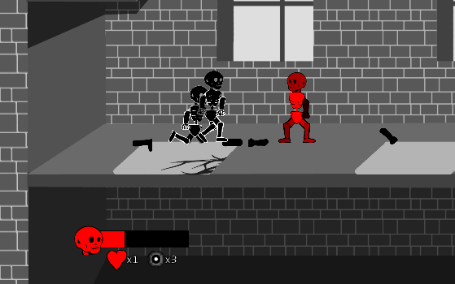 | Broken Bones (Github)A physics-based fighting game where every limb is its own object with its own health and strength attribute. While the physics-driven movement and combat is interesting technically, the game-feel and balance leaves something to be desired. |
| 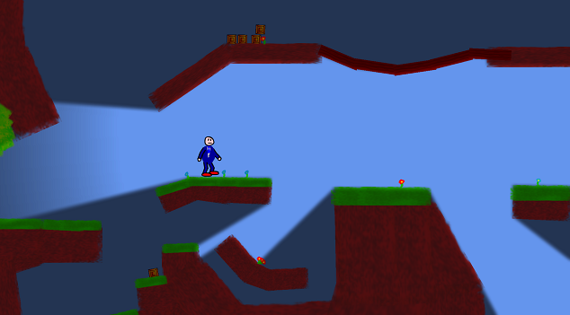 | Mr. GuyAn attempt at making a flexible engine in XNA. Unfortunately I made some choices that made supporting this quite difficult, and I stopped working on it. |
 | Speedrunner's ParadiseA 2D platformer focusing on routing/beating levels fast. It had some pretty interesting technical features, like a replay recorder and online leaderboards (which were taken down), but ultimately had a **lot** of poor level + game design choices. |
 | Cat Planet 2The game I made to learn how to use XNA. Not actually terrible, aside from some frame hitches when switching screens. Inspired by Cat Planet. |
| 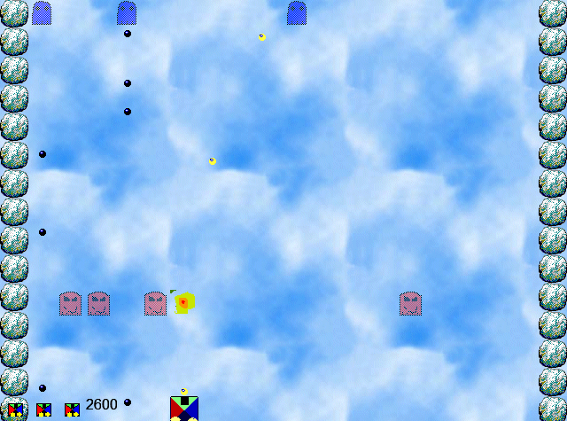 | Ghost EliminatorThe first game project I ever started. |
| 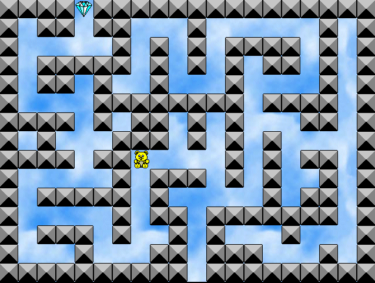 | Teddy MazeThe first game project I ever finished. |
| 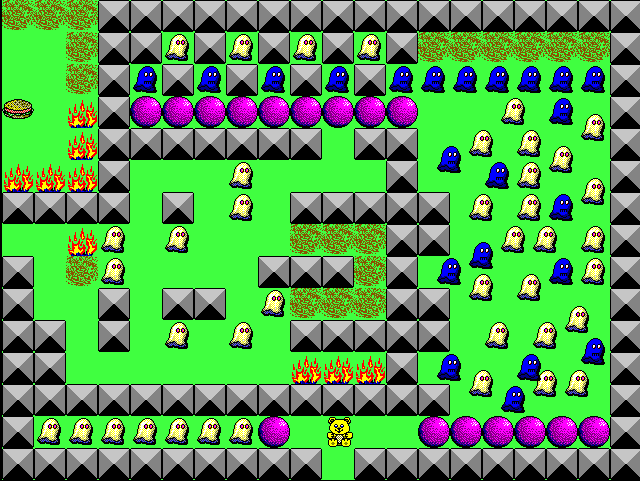 | Teddy Maze 2The long awaited sequel. |
 | The Puzzling World of Robo JoeAn action puzzler sporting 50 levels. Made this with a friend in ~2005 or 2006. |
| 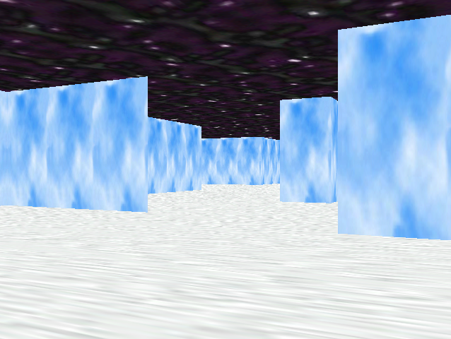 | 3D MazeShort 3D graphics Game Maker test. |
| 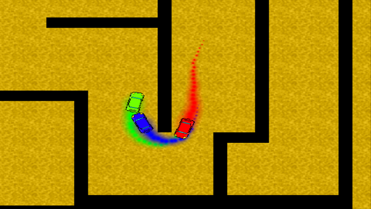 | AG RacingVery hard. |
| 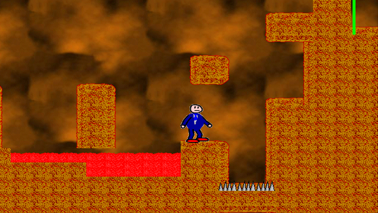 | Mr. Guy (Game Maker version)Probably the worst-controlling platformer character you'll ever find. |
| 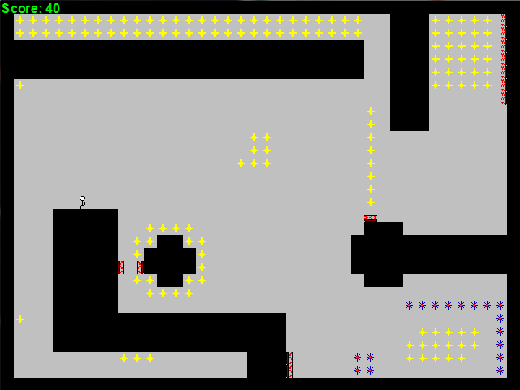 | Air RunnerWait no, this is a worse controlling platformer. |
| 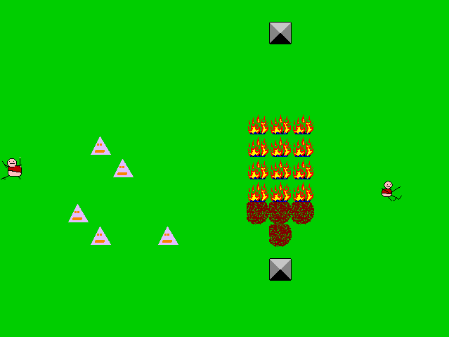 | BOB the adventures of BOBsorry |
| 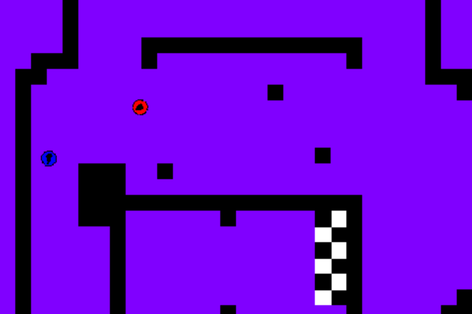 | Bounce RacersThis one is quite frustrating to play. |
| 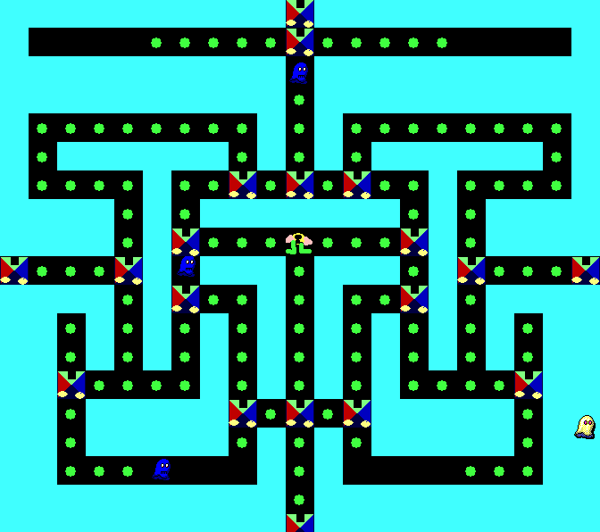 | Cog PersonUnfinished pac-man clone-ish thing. |
| 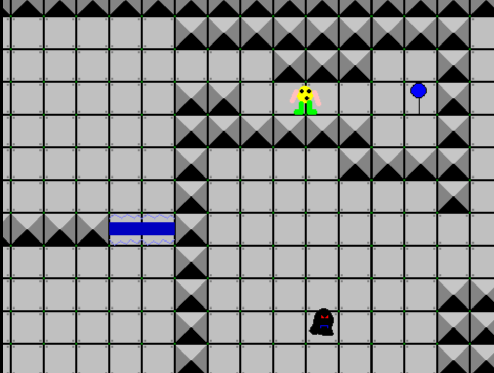 | Cog 2Literally nothing like the first game. Has a pretty cringey story too. |
| 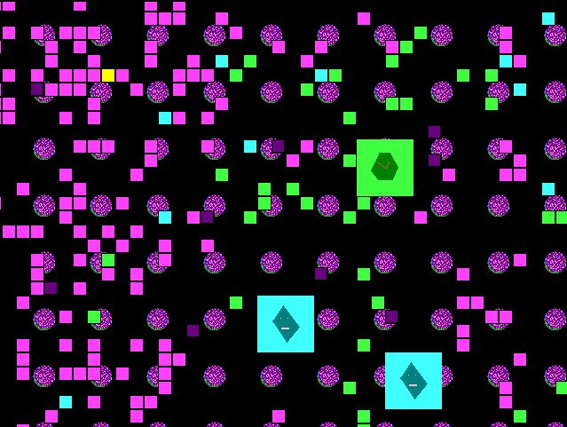 | Find the Yellow BlockWhat it sounds like. |
| 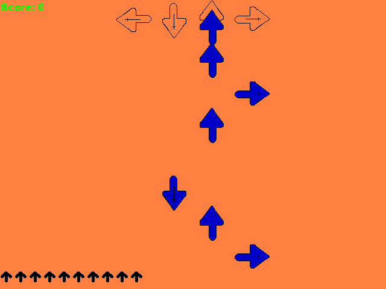 | Finger ReflexerStepmania with no music. |
| 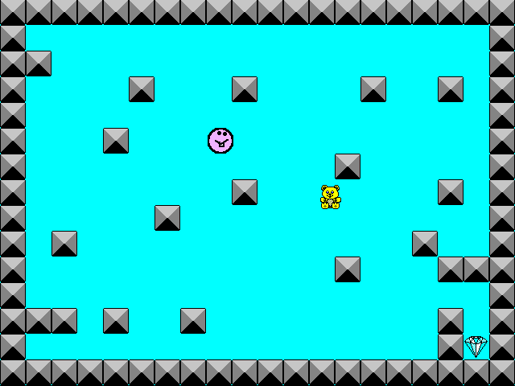 | Foopy!I don't know either. |
| 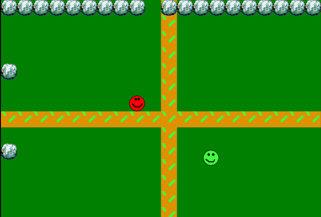 | Fun ZoneOpen world sandbox game. What can you find? |
| 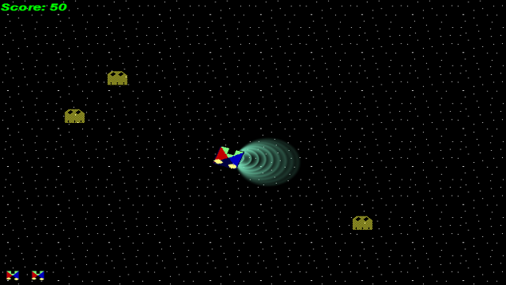 | Ghost Eliminator 2More like Asteroids than Galaga. |
| 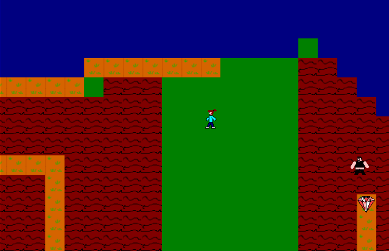 | Krash KidsI'm in this game. |
| 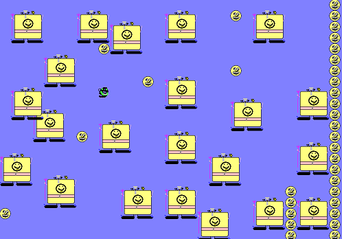 | Mahoggya!I don't think there are any actual words in this game. |
| 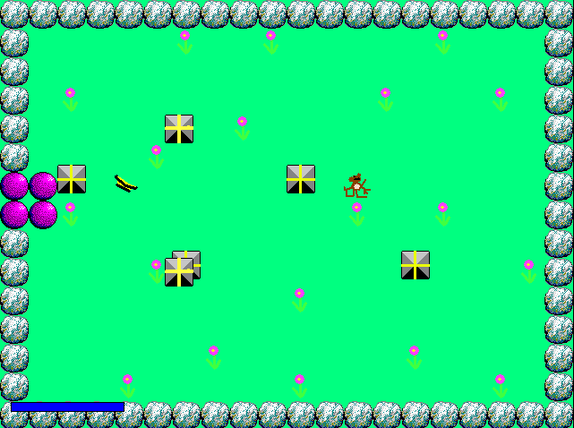 | MONKEY!!!!!!!!This might be an anti-poaching PSA? Not sure. |
| 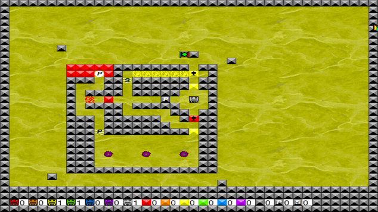 | NigglesI actually got the idea for HueBots in ~2006 or 2007, and this is my first attempt at making it. Unfortunately I knew nothing about game design, so it turned out pretty bad. |
| 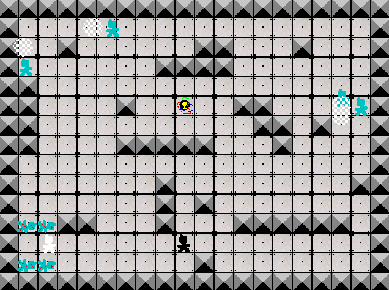 | NomkoodofizzyCo-op stealth game. Kill all the dudes and blow up the bomb. |
| 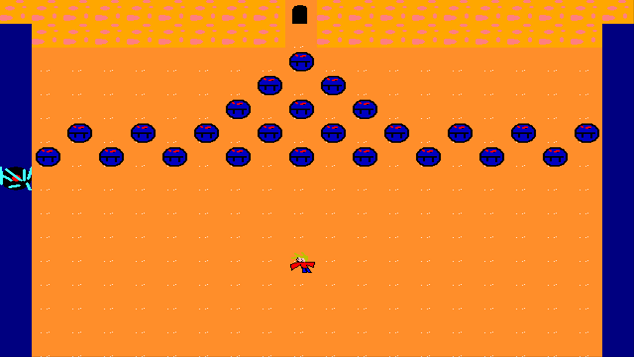 | STBI'm in this game too. It's pretty long. |
| 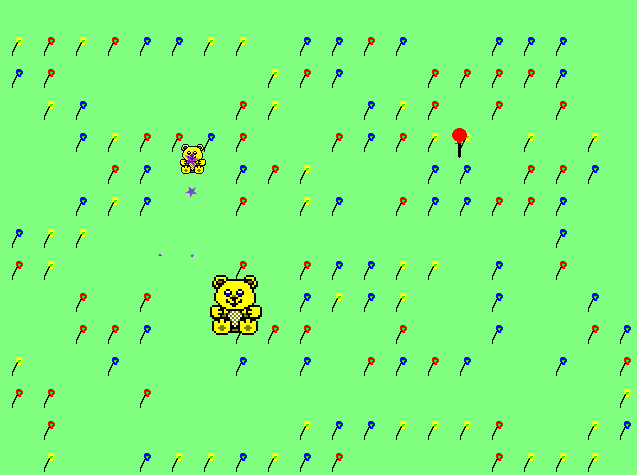 | UmmA friend told me to make this. |